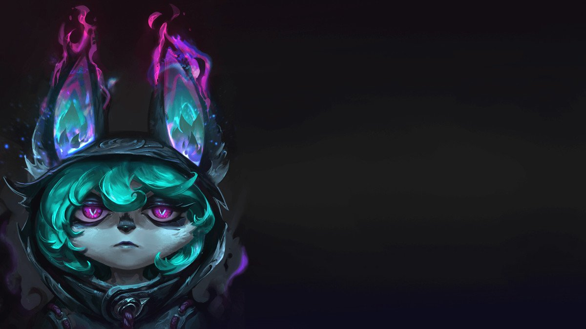

História da Campeã
Em meio à escuridão das Ilhas das Sombras, uma solitária yordle se move com pesar, abrindo caminho pela névoa espectral, satisfeita em viver nas trevas. Com uma poderosa sombra no seu encalço e uma fonte inesgotável de mazelas nas costas, Vex evita a todo custo qualquer vislumbre de alegria e felicidade do mundo exterior, e aqueles seres enfadonhos que nele vivem e se dizem "normais".
Ela cresceu em Bandópolis, mas nunca sentiu que aquele era o seu lugar. As cores e a extravagância do universo yordle lhe causavam enjoo. Apesar de todo o esforço dos pais, Vex nunca se identificou com o "espírito yordle" nem teve amigos com interesses em comum. Ela preferia passar boa parte do tempo emburrada no quarto.
Foi lá que encontrou sua improvável alma gêmea, a própria sombra. Era toda preta (a cor favorita de Vex) e não emitia sequer uma palavra: a companhia perfeita para uma jovem taciturna. Vex aprendeu a se entreter com a sombra, realizando pantomimas lúgubres para se distrair.
Infelizmente, era apenas uma sombra, incapaz de protegê-la da repugnante alegria que a cercava. Devia haver algo melhor que aquilo para ela no futuro. Algo mais sombrio. Triste. Algo que fosse igual a ela.
Aquilo que ela tanto esperava chegou na forma de um Tormento, nuvens espessas de Névoa Negra que engoliram Bandópolis, despertando o pânico entre a população. Enquanto a maioria dos yordles lutava corajosamente para impedir o avanço da Névoa, Vex estava intrigada com aquele miasma pestilento e o seguiu até sua fonte.
Ao chegar às Ilhas das Sombras, Vex não conseguiu acreditar no que via. Vastas extensões de terra e mar sem nenhum sinal de vida nem cor bem diante de seus olhos. Ali ela poderia finamente fechar a cara sem ser incomodada pelas gargalhadas e alegria dos outros.
À medida que os dias se passavam, Vex foi percebendo que a Névoa Negra tinha um estranho efeito sobre ela. A sombra que a acompanhava tinha assumido uma nova identidade fantasmagórica, muito mais expressiva e vivaz que ela, e sua magia yordle benigna tinha se transformado em algo muito mais sinistro. Agora, Vex era capaz de levar sua tristeza a distâncias muito maiores.
"Quem é o responsável por um lugar assim tão maravilhoso?", ela se perguntava.
Logo teve a resposta quando Viego, o Rei Destruído, surgiu nas Ilhas decidido a espalhar a Névoa pelos quatro cantos de Runeterra. Ao se encontrar com Vex, Viego percebeu que a yordle tinha a incrível habilidade de espalhar o desespero, deixando as pessoas mais vulneráveis ao Tormento. Por sua vez, Vex se sentiu inspirada pela visão dele de um mundo dominado pela Névoa Negra. Os dois logo se tornaram aliados e partiram na missão de tornar o mundo um deserto angustiante.
Antes que os planos de Viego pudessem se concretizar, Vex descobriu a verdadeira motivação dele: recuperar a alma de sua falecida rainha, Isolde, e juntar-se a ela em júbilo matrimonial. Ela estremeceu, enojada, sentindo-se traída, pois acreditara que aquele homem mataria a felicidade do mundo, mas, na verdade, ele a desejava para si. Vex deixou que Viego fosse derrotado pelos Sentinelas da Luz e permitiu que os sonhos dele de um mundo arruinado fossem esmagados pelos destroços de Camavor. Sozinha mais uma vez, observou, com desgosto, o mundo voltar a ser aquele lugar iluminado e colorido que ela sempre odiara. Encontrar uma melancolia duradoura seria mais difícil do que imaginara.
Havia só mais um lugar para onde ela poderia ir. Um lugar onde certamente encontraria a tristeza pela qual tanto ansiava. Vex foi visitar os pais em Bandópolis, ansiosa por mostrar a eles no que tinha se transformado e desfrutar da desaprovação deles.
A jovem yordle só observou enquanto os pais, emudecidos pelo choque, não mexiam um músculo. A expressão que tinham no rosto foi mudando de choque para negação, até a relutante aceitação.
"Querida. Não conseguimos entender... isso", disse a mãe, apontando para todas as partes da filha.
"Mas amamos você incondicionalmente", disse o pai. "E, se você está feliz, nós também estamos, por você."
Revirando os olhos, Vex deu um suspiro sonoro e exasperado. "Fala sério", resmungou.
Saiu se arrastando da sala de estar na casa dos pais, ansiosa para voltar às Ilhas das Sombras, onde poderia ficar de mau humor sem ser incomodada.